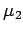
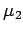

Inhalt Index DeskTop Bronstein

 Algebra und Diskrete Mathematik Fuzzy-Logik Fuzzy-wertige Relationen Fuzzy-Relationenprodukt
Algebra und Diskrete Mathematik Fuzzy-Logik Fuzzy-wertige Relationen Fuzzy-Relationenprodukt


Das fuzzy-logische Schließen z.B. mit der WENN-DANN-Regel ist über die Verknüpfung  möglich. Die Fuzzy-Menge  stellt dann die gesuchte Schlußfolgerung dar, die sich als Formel wie folgt darstellt:
möglich. Die Fuzzy-Menge  stellt dann die gesuchte Schlußfolgerung dar, die sich als Formel wie folgt darstellt:
mit und